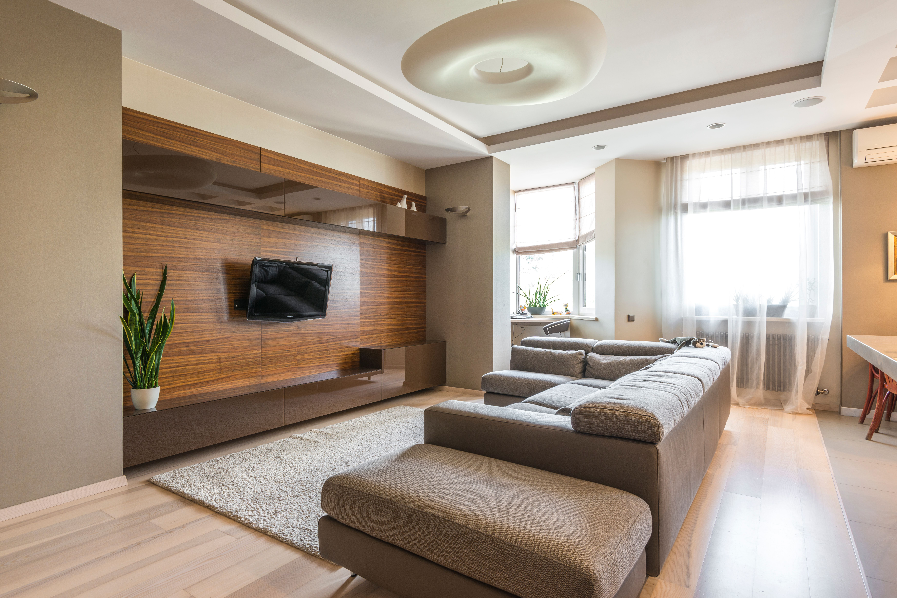

Más de 6 décadas de carpintería artesanal, hoy en su tercera generación.
Ver catálogoHace más de 6 décadas, en 1960, Juan José fundó en Buenos Aires una pequeña carpintería que llevaba su apellido y su pasión por el trabajo artesanal. Lo que empezó como un modesto taller pronto se transformó en la reconocida Mueblería Hermanos Jota. Hoy, bajo la dirección de Carla —tercera generación comprometida con la tradición familiar— seguimos trabajando bajo los principios del diseño mid-century: líneas limpias, materiales nobles, funcionalidad clara y estética atemporal.